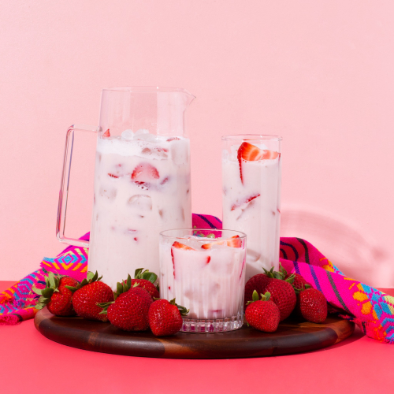

Strawberry Horchata Drink Recipe

Strawberry Horchata is a delicious and refreshing drink that you can pair with any food. If you love horchata on its own, you will love strawberry horchata even more!
Horchata was introduced to Mexico from the Spaniard heritage. It was adapted fairly quickly and soon loved by everyone you can find this creamy and sweet drink at any restaurant, ice parlor, and on every street in Mexico.
The preparation for the strawberry horchata water is one of the most popular modern recipes for fresh waters in Mexico. Most of the recipes include condensed or evaporated milk, but you can also use any dairy-free milk as well.
Ingredients Needed
- 1 cup uncooked white rice
- 6 cups of water
- 10oz of strawberries
- 2/3 of your choice of milk
- 1 small cinnamon stick
- 1 tsp vanilla extract
- Any sweetener of your choice
- Crushed ice
Instructions
- Rinse the rice under cold water for about 4 hours, or overnight if possible. Make sure you leave the cinnamon stick soak with the rice as well.
- Add the soaked rice and cinnamon along with the water to a blender. Blend on high until it is completely smooth.
- Strain the liquid into a large pitcher and discard the leftover pulp.
- Add 2/3 of the strawberries to the blender with half a cup of water. Make sure to blend until its a smooth consistency and strain into the pitcher.
- Add your choice of milk along with the vanilla extract and sweetener to taste. Stir well until everything is combined.
- Cut the rest of the strawberries and add to the horchata. Through this process make sure to adjust other ingredients to your taste, such as sugar and the vanilla extract.
- You can now cool your horchata in the fridge for 1-2 hours before serving, or you can serve with crushed ice immediately.
Notes
- Don't add ice to the pitcher with the horchata because it will dilute your drink, instead add ice to the glasses and serve as you go.
- If strawberries are not in season, you can use frozen strawberries.
- If cinnamon sticks are not available you can also use 1 tbsp should be enough for this recipe.
Nutrition
- Calories: 100kcal
- Carbohydrates: 21g
- Protein: 2g
- Fat: 1g
- Saturated Fat: 1g
- Polyunsaturated Fat: 1g
- Monounsaturated Fat: 1g
- Sodium: 38mg
- Potassium: 82mg
- Fiber: 1g
- Sugar: 2g